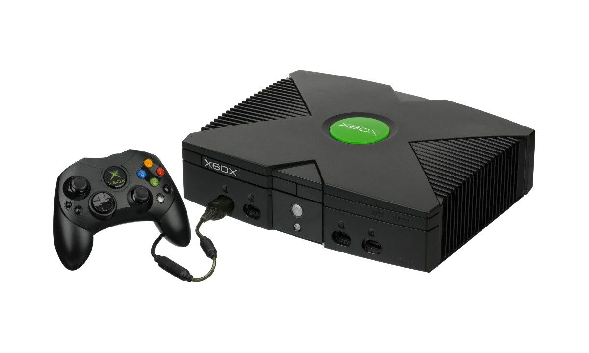
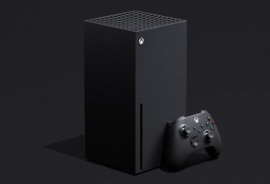

<div id="contenidoPanel">
  <div>
    <mat-grid-list cols="3" rowHeight="4:1">
      <mat-grid-tile></mat-grid-tile>
      <mat-grid-tile></mat-grid-tile>
      <mat-grid-tile></mat-grid-tile>
    </mat-grid-list><br>

    <mat-grid-list cols="3" rowHeight="5:1">
      <mat-grid-tile>
        Xbox, también llamada Xbox Clásica, es una videoconsola de sobremesa de sexta generación producida por Microsoft y la primera de esta empresa, en colaboración con Intel. Su principal característica es su procesador central basado en el procesador Intel Pentium III.
      </mat-grid-tile>
      <mat-grid-tile></mat-grid-tile>
      <mat-grid-tile>
        Xbox, en sus versiones Series X y Series S, es una línea de videoconsolas de sobremesa desarrolladas por Microsoft y la cuarta generación de la familia de consolas Xbox. La familia de consolas, conocida colectivamente como "Project Scarlett"1 y revelada por primera vez en el E3 2019
      </mat-grid-tile>
    </mat-grid-list><br>

    <mat-grid-list cols="3" rowHeight="3:1">
      <mat-grid-tile></mat-grid-tile>
      <mat-grid-tile></mat-grid-tile>
      <mat-grid-tile></mat-grid-tile>
    </mat-grid-list>
  </div>
</div>
